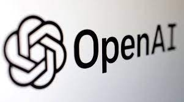
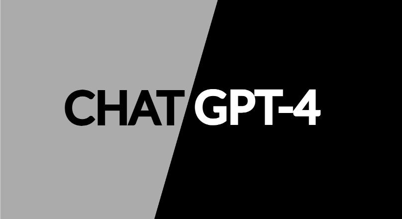

Sam
Altman
CEO OF THE YEAR 2023
It was a strange Thanksgiving for Sam Altman. Normally, the CEO of OpenAI flies home to St. Louis to visit family. But this time the holiday came after an existential struggle for control of a company that some believe holds the fate of humanity in its hands. Altman was weary. He went to his Napa Valley ranch for a hike, then returned to San Francisco to spend a few hours with one of the board members who had just fired and reinstated him in the span of five frantic days. He put his computer away for a few hours to cook vegetarian pasta, play loud music, and drink wine with his fiancé Oliver Mulherin. “This was a 10-out-of-10 crazy thing to live through,” Altman tells TIME on Nov. 30. “So I'm still just reeling from that.”
We're speaking exactly one year after OpenAI released ChatGPT, the most rapidly adopted tech product ever. The impact of the chatbot and its successor, GPT-4, was transformative—for the company and the world. “For many people,” Altman says, 2023 was “the year that they started taking AI seriously.” Born as a nonprofit research lab dedicated to building artificial intelligence for the benefit of humanity, OpenAI became an $80 billion rocket ship. Altman emerged as one of the most powerful and venerated executives in the world, the public face and leading prophet of a technological revolution.
No matter What you choose, build stuff and be around smart people.
Until the rocket ship nearly imploded. On Nov. 17, OpenAI’s nonprofit board of directors fired Altman, without warning or even much in the way of explanation. The surreal maneuvering that followed made the corporate dramas of Succession seem staid. Employees revolted. So did OpenAI’s powerful investors; one even baselessly speculated that one of the directors who defenestrated Altman was a Chinese spy. The company’s visionary chief scientist voted to oust his fellow co-founder, only to backtrack. Two interim CEOs came and went. The players postured via selfie, open letter, and heart emojis on social media. Meanwhile, the company’s employees and its board of directors faced off in “a gigantic game of chicken,” says a person familiar with the discussions. At one point, OpenAI’s whole staff threatened to quit if the board didn’t resign and reinstall Altman within a few hours, three people involved in the standoff tell TIME. Then Altman looked set to decamp to Microsoft—with potentially hundreds of colleagues in tow. It seemed as if the company that catalyzed the AI boom might collapse overnight.
In the end, Altman won back his job and the board was overhauled. “We really do feel just stronger and more unified and more focused than ever,” Altman says in the last of three interviews with TIME, after his second official day back as CEO. “But I wish there had been some other way to get there.” This was no ordinary boardroom battle, and OpenAI is no ordinary startup. The episode leaves lingering questions about both the company and its chief executive. Altman, 38, has been Silicon Valley royalty for a decade, a superstar founder with immaculate vibes. “You don’t fire a Steve Jobs,” said former Google CEO Eric Schmidt. Yet the board had. (Jobs, as it happens, was once fired by Apple, only to return as well.) As rumors swirled over the ouster, the board said there was no dispute over the safety of OpenAI’s products, the commercialization of its technology, or the pace of its research. Altman’s “behavior and lack of transparency in his interactions with the board” had undermined its ability to supervise the company in accordance with its mandate, though it did not share examples.
Interviews with more than 20 people in Altman’s circle—including current and former OpenAI employees, multiple senior executives, and others who have worked closely with him over the years—reveal a complicated portrait. Those who know him describe Altman as affable, brilliant, uncommonly driven, and gifted at rallying investors and researchers alike around his vision of creating artificial general intelligence (AGI) for the benefit of society as a whole. But four people who have worked with Altman over the years also say he could be slippery—and at times, misleading and deceptive.
He cares about the mission, he cares about other people, he cares about humanity. But there’s also a clear pattern, if you look at his behavior, of really seeking power in an extreme way.